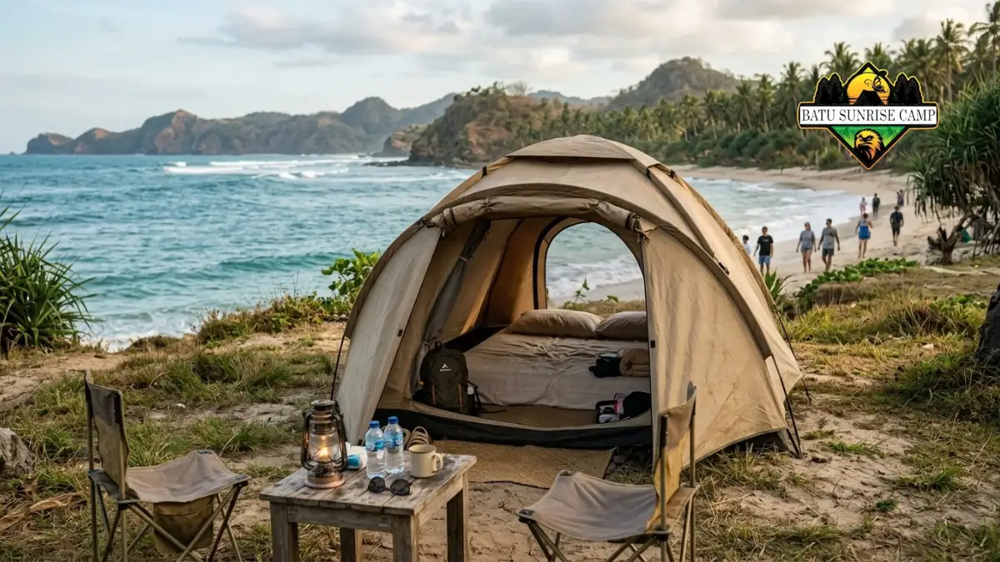

Cara hemat booking glamping pantai adalah memilih hari kerja, membandingkan fasilitas yang termasuk, memesan lebih awal, dan berangkat berkelompok agar biaya per orang lebih rendah.
Bagaimana cara mendapatkan tarif glamping pantai lebih murah?
Tarif glamping pantai lebih murah didapat dengan menginap pada hari kerja, memesan sebelum musim ramai, memilih unit non-tepi pantai, dan memanfaatkan paket menginap yang sudah mencakup fasilitas.
Strategi pertama adalah memilih hari kerja. Tarif akhir pekan umumnya lebih tinggi dibanding Senin sampai Kamis.
Sebagai gambaran, Discover Banyuwangi pada Desember 2024 melaporkan Deluxe Glampcamp untuk empat orang seharga Rp975.000 pada hari kerja dan Rp1.150.000 pada akhir pekan. Selisihnya Rp175.000 per malam, atau sekitar 18 persen.
Strategi kedua adalah memesan lebih awal. Industry.co.id pada Juli 2026 menyarankan pemesanan jauh hari untuk akhir pekan, karena unit populer cepat penuh dan pilihan yang tersisa biasanya lebih mahal.
Strategi ketiga adalah memilih unit yang tidak tepat di garis pantai. Unit di area belakang biasanya lebih murah, sementara jaraknya ke pantai tetap dapat ditempuh dengan berjalan kaki.
Apa yang harus dicek sebelum membayar booking glamping pantai?
Sebelum membayar booking glamping pantai, periksa fasilitas yang termasuk, kapasitas maksimal, biaya tambahan, jam check-in dan check-out, serta kebijakan pembatalan dan penjadwalan ulang.
Periksa dahulu isi paket: sarapan, tiket masuk kawasan, listrik, air panas, dan kamar mandi dalam atau bersama.
Laporan VIVA Bali pada September 2026 mencatat bahwa tarif glamping pesisir biasanya sudah mencakup sarapan, tiket masuk kawasan, dan akses fasilitas pendukung, namun setiap lokasi bisa berbeda.
Periksa kapasitas tenda dan biaya tamu tambahan. Tenda untuk dua orang mungkin tidak nyaman bagi tiga orang, dan beberapa pengelola menerapkan biaya per kepala tambahan.
Periksa kebijakan pembatalan. Pantai dipengaruhi cuaca dan kondisi laut, sehingga opsi penjadwalan ulang lebih berharga daripada diskon kecil.
Simpan bukti pemesanan berupa tangkapan layar atau pesan tertulis.
Apakah glamping murah selalu lebih hemat?
Glamping murah belum tentu lebih hemat karena biaya makan, aktivitas, dan tambahan tamu dapat membuat total pengeluaran melebihi tenda yang lebih mahal tetapi lengkap.
Contoh perbandingan dapat dilihat pada glamping non-pantai. Mengerti.id pada Juni 2026 melaporkan beberapa glamping di kawasan Danau Batur, Kintamani, Bali, dengan tarif sekitar Rp250.000 hingga Rp350.000 per malam, dan salah satunya sudah mencakup sarapan.
Contoh ini menunjukkan bahwa tarif rendah bisa dicapai pada lokasi berlatar danau atau pegunungan, tetapi konteks pantai memiliki biaya dan permintaan yang berbeda.
Untuk glamping pantai, tenda berharga rendah sering memiliki fasilitas dasar.
Bila wisatawan memerlukan kamar mandi dalam, sarapan, dan akses pantai, tenda kelas menengah dapat menjadi pilihan yang lebih hemat secara keseluruhan.
Cara paling adil adalah menghitung total biaya, bukan tarif per malam saja. Panduan lengkapnya ada di artikel rincian biaya glamping pantai.

Tenda glamping versi hemat di area pesisir pantai dengan fasilitas dasar namun tetap nyaman dan pemandangan laut.
Bagaimana cara memaksimalkan patungan untuk glamping pantai?
Patungan glamping pantai paling efektif dengan memilih tenda berkapasitas besar, menyepakati budget sejak awal, dan mencatat biaya bersama secara transparan.
Tenda berkapasitas empat orang sering lebih murah per kepala daripada dua tenda kapasitas dua orang.
Dengan contoh Rp1.150.000 untuk empat orang, biaya akomodasi sekitar Rp287.500 per orang.
Tunjuk satu bendahara dan buat catatan pengeluaran di ponsel. Pisahkan biaya bersama dan biaya pribadi agar tidak menimbulkan salah paham.
Sepakati juga aktivitas berbayar apa saja yang akan diambil bersama.
Bila jumlah rombongan cukup banyak, tanyakan kepada pengelola apakah tersedia paket kelompok atau potongan harga.
Ketersediaan dan besarannya berbeda pada setiap lokasi, sehingga perlu dikonfirmasi langsung.
Apakah lokasi alternatif dekat pantai bisa menghemat biaya?
Lokasi alternatif dekat pantai dapat menghemat biaya karena tarif unit di area sekitar destinasi populer umumnya lebih rendah dibanding unit yang tepat di garis pantai.
Wisatawan dapat mencari glamping di desa pesisir yang berjarak beberapa kilometer dari pantai utama. Perjalanan singkat ke pantai tetap memungkinkan, sementara tarif tenda bisa lebih rendah.
Pertimbangkan pula biaya transportasi tambahan. Bila jarak ke pantai membutuhkan kendaraan setiap hari, penghematan tarif bisa berkurang.
Hitung selisih tarif dan biaya perjalanan sebelum memutuskan.
Periksa juga akses jalan dan keamanan area, terutama untuk kedatangan malam hari. Lokasi yang lebih murah harus tetap aman dan mudah dijangkau.
Apa kesalahan umum yang membuat biaya glamping pantai membengkak?
Kesalahan umum yang membuat biaya glamping pantai membengkak adalah memesan mendadak saat musim ramai, tidak membaca fasilitas paket, dan tidak menyiapkan dana cadangan.
Kesalahan pertama adalah memesan mendadak untuk akhir pekan panjang. Pilihan tersisa biasanya terbatas dan tarifnya tinggi.
Kesalahan kedua adalah tidak membaca rincian paket. Wisatawan kemudian membayar terpisah untuk sarapan, tiket masuk, atau sewa alat yang sebenarnya bisa masuk paket di tempat lain.
Kesalahan ketiga adalah mengabaikan kebijakan pembatalan. Cuaca buruk dapat memaksa perubahan jadwal, dan tanpa opsi penjadwalan ulang, wisatawan berisiko kehilangan pembayaran.
Kesalahan keempat adalah tidak menyisihkan dana cadangan sekitar sepersepuluh total budget untuk kebutuhan tak terduga.
Bagaimana tips hemat ini berkaitan dengan harga dan waktu menginap?
Tips hemat booking glamping pantai bekerja paling baik bila dikombinasikan dengan pemahaman kisaran tarif dan pemilihan waktu menginap yang tepat.
Untuk memahami kisaran tarif per kelas dan faktor penentunya, baca harga glamping di pantai 2026. Untuk memilih tanggal dan musim yang tepat, baca waktu terbaik glamping di pantai.
Kesimpulan
Cara hemat booking glamping pantai berfokus pada pemilihan hari, pemesanan awal, perbandingan fasilitas, dan patungan yang transparan.
Tarif rendah tidak selalu menghasilkan total biaya rendah, sehingga perhitungan menyeluruh lebih penting.
Langkah praktis: bandingkan tiga pilihan dengan daftar fasilitas yang sama, pilih hari kerja bila fleksibel, minta rincian biaya tertulis, periksa kebijakan pembatalan, dan sisihkan dana cadangan.
Dengan langkah tersebut, budget liburan lebih terjaga tanpa mengorbankan kenyamanan.